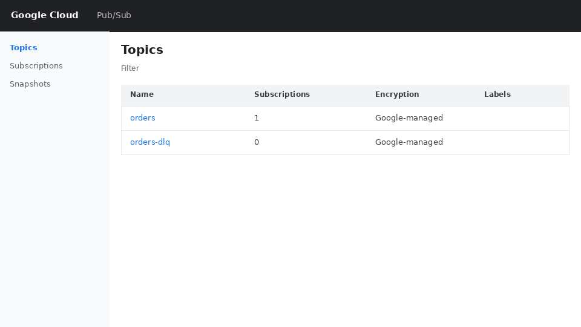
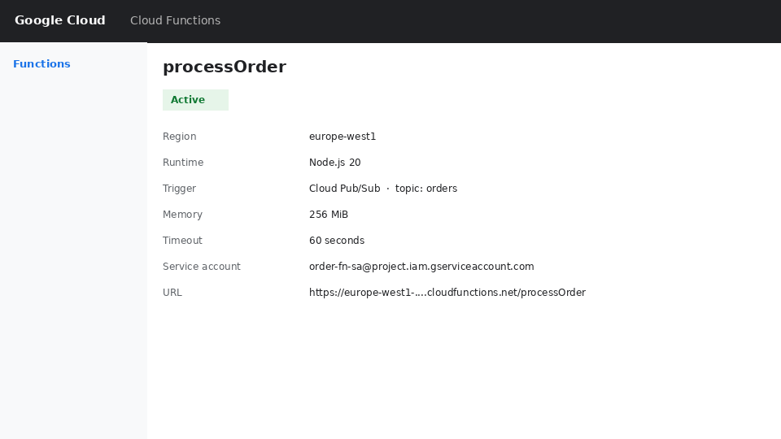
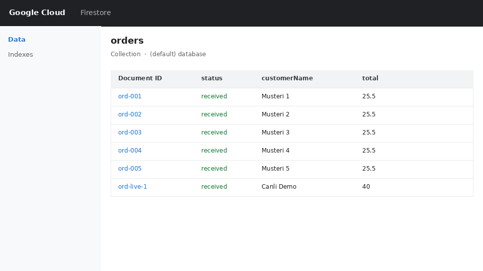

Intermediate project · orders stay safe even when the kitchen side is slow
A pizza shop needs orders to keep coming in even if the kitchen system is slow or temporarily down. We put Pub/Sub between the order source and the kitchen so the two sides are not tightly coupled.
The order source only publishes a message. It does not wait for the function or the kitchen. If the function is down for a minute, messages stay in the topic and Pub/Sub retries delivery. That is the main reason decoupling helps with scalability and reliability.
Messages on the orders topic are JSON. orderId is required because we use it as the Firestore document ID:
If orderId is missing, the function throws. Pub/Sub retries a few times; after that the message can move to a dead-letter topic so we can inspect it later.
orderId is missingreceivedPub/Sub topics

Topic orders (and dead-letter topic orders-dlq)
Cloud Function

Function processOrder, trigger = Pub/Sub topic orders
Firestore

Orders written by the function (status received)
orderIds → all appeared in FirestoreorderId again → second write was skippedorderId → function error (expected path for retries / dead letter)If the function is offline for a short time, messages remain in the topic until they can be delivered and acknowledged.
orderId so at-least-once delivery does not create duplicatesDelete the function, the topics and the test documents so we stay inside free tier.